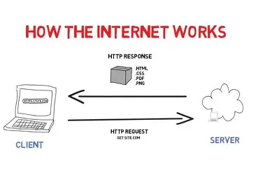

DNS is a system that deals with the server available in the world. It translates domain names like google.com into IP addresses that computers use to identify each other on a network.It acts like internet's phonebook.
An ISP connects you to the internet and gives access to DNS servers, which translates domain name to IP
addresses.Once the DNS finds the IP, the ISP routes the request by the user to the server where the domain's data is
stored, and then delivers that data back the the user's device.
Example for ISP: Jiofiber, BSNL, ACT etc

A client is a device,software or application that interacts with the server. The client requests services or resources from the server over a network. The server responds by by providing the required data or resources.
Server is a computer or system that provides services, resources, or data to other devices know as clients, over a network. It analyses and processes request sent by the clients and responds with required information.
Internet
IPV4
IPV6
Client
Server
DNS - Domain Name System
IP Address
ISP - Internet Service Provider
3 Files sent by Server - HTML, CSS, JAVASCRIPT